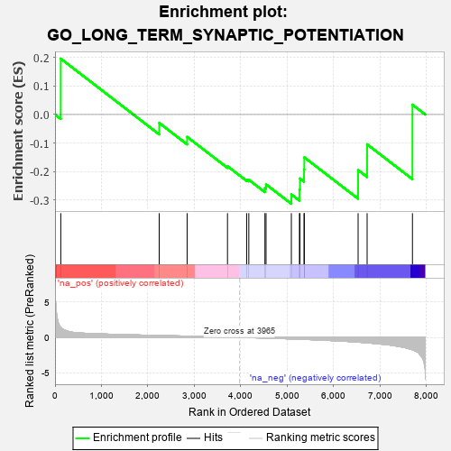
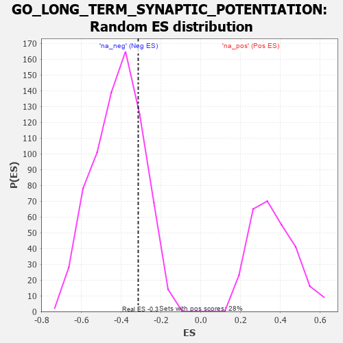

| | | Dataset | 7d |
| Phenotype | NoPhenotypeAvailable |
| Upregulated in class | na_neg |
| GeneSet | GO_LONG_TERM_SYNAPTIC_POTENTIATION |
| Enrichment Score (ES) | -0.3139696 |
| Normalized Enrichment Score (NES) | -0.7529445 |
| Nominal p-value | 0.7933426 |
| FDR q-value | 0.99687994 |
| FWER p-Value | 1.0 |
Table: GSEA Results Summary

Fig 1: Enrichment plot: GO_LONG_TERM_SYNAPTIC_POTENTIATION
Profile of the Running ES Score & Positions of GeneSet Members on the Rank Ordered List
| PROBE | GENE SYMBOL | GENE_TITLE | RANK IN GENE LIST | RANK METRIC SCORE | RUNNING ES | CORE ENRICHMENT | | 1 | ADCY8 | | | 124 | 1.418 | 0.1964 | No |
| 2 | CREB1 | | | 2243 | 0.269 | -0.0295 | No |
| 3 | NR2E1 | | | 2844 | 0.177 | -0.0785 | No |
| 4 | NF1 | | | 3713 | 0.040 | -0.1816 | No |
| 5 | ABL1 | | | 4125 | -0.027 | -0.2293 | No |
| 6 | SYT12 | | | 4172 | -0.037 | -0.2295 | No |
| 7 | NPTN | | | 4519 | -0.098 | -0.2583 | No |
| 8 | NTRK2 | | | 4543 | -0.104 | -0.2456 | No |
| 9 | DRD2 | | | 5088 | -0.221 | -0.2808 | Yes |
| 10 | PTEN | | | 5262 | -0.261 | -0.2635 | Yes |
| 11 | EPHA4 | | | 5273 | -0.265 | -0.2252 | Yes |
| 12 | ITPR3 | | | 5361 | -0.288 | -0.1931 | Yes |
| 13 | MPP2 | | | 5367 | -0.288 | -0.1506 | Yes |
| 14 | VAMP2 | | | 6525 | -0.672 | -0.1955 | Yes |
| 15 | GSK3B | | | 6719 | -0.768 | -0.1048 | Yes |
| 16 | ADCY1 | | | 7695 | -1.752 | 0.0347 | Yes |
Table: GSEA details [plain text format]

Fig 2: GO_LONG_TERM_SYNAPTIC_POTENTIATION: Random ES distribution
Gene set null distribution of ES for GO_LONG_TERM_SYNAPTIC_POTENTIATION